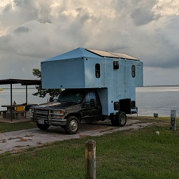

About Me
Location

Nomad
128 sq ft Studio Apartment on Wheels
- 2000 chevy ck3500 dually
- 1300 watts of solar
- gas or propane autostart generator
- 40 gallon freshwater tank
- 27 gallon grey water tank
- 13 gallon black water tank
- shower
- toilet
- sink
- 2 burner propane stove top
- smart oven/air frier/dehydrator/toaster
- slow cooker/rice cooker/saute&simmer/steamer
- fridge w/freezer
- queen bed
- bunk bed/couch
- more storage space than you probably think
Technology Spa, Dallas
Director of Devops
NOV2014 - JAN2023
- Technology Spa is a Boutique IT services provider helping clients optimize and modernize their IT infrastructure to align with business goals.
- I started in 2014 as a devops engineer. And was promoted to director of my team in april 2017
- Led a DevOps team, migrating clients to cloud platforms (AWS/Azure) and modernizing data center deployments.
- Automated infrastructure and deployments (CI/CD) using scripting (Cloudformation, Terraform, Ansible, Python, Bash, Jenkins) for increased efficiency.
- Managed production workloads for numerous clients across diverse application stacks (.Net, Java, PHP, etc.) and databases (MS SQL, MySQL, noSQL).
- Full lifecycle of network infrastructure (Layer 1-4) for on-premises (Cisco, ASA, F5) and cloud environments (VPCs, subnets, VPNs)
- Extensive experience in network troubleshooting, resolving issues across switches, routers, firewalls, cloud VPC’s and VPNs.
- Virtualization: vmware, docker, kvm, virtualbox ##Softlayer, an IBM Company, Dallas
Manage Services /Professional Services / Linux/Windows Systems Administrator
April2006 - NOV2014
- started as a data center technician (The Planet) in April 2006
- promoted to Supervisor in April 2007
- promoted to Professional Services Engineer (The Planet and Softlayer) March 2008
- promoted to Managed Services Team (Softlayer an IBM company) in March 2011
- Troubleshooted network issues across diverse equipment (Cisco, Vyatta, Fortinet) ensuring network stability.
- Managed Linux environments (Red Hat, Ubuntu, etc.) for web servers, 3rd party applications, and varying levels of high availability needs. Performed OS hardening for enhanced security.
- Performed manual cloud application migrations between providers, ensuring seamless transitions without downtime.
- Implemented network storage solutions (SAN/NAS) using iSCSI, NFS, and SMB protocols for application needs.
- Supported, installed, configured, and maintained Windows servers, including IIS web applications (.NET), and ensured high availability for SQL Server deployments (standalone and clusters).
- Configured, maintained, and troubleshooted mail servers (SMTP, POP3/IMAP, webmail) utilizing linux tools or Microsoft Exchange.
- Designed, implemented, managed, and troubleshooted Active Directory in complex trust and multi-tenant environments